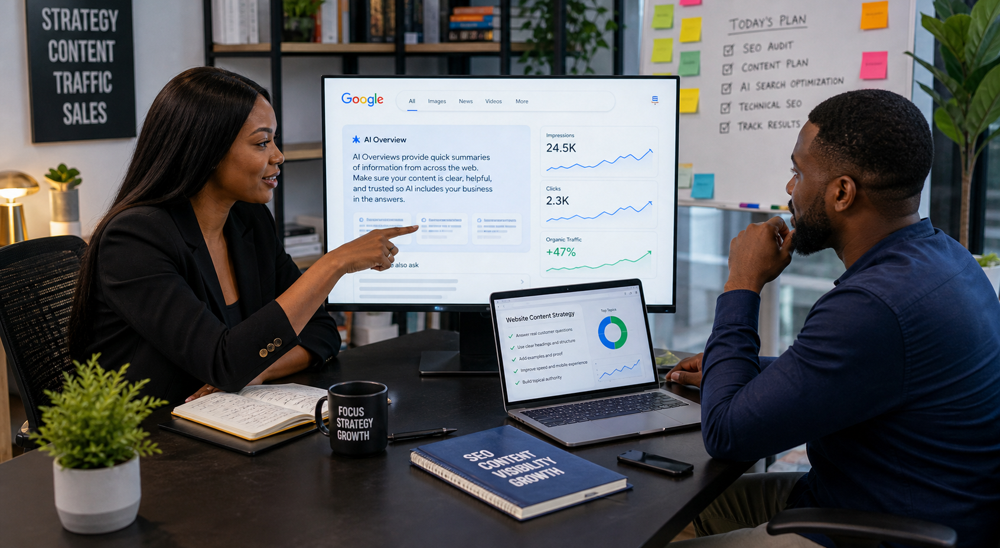

A customer is asking. Is your business part of the answer?
Imagine someone in Lagos needs a marketing agency, someone in Accra is comparing online stores, or a hotel guest wants a place to stay in Abuja. Instead of opening ten tabs, they ask an AI assistant for a shortlist.
Now imagine your business does exactly what they need. But your website is vague, your contact details are out of date, and the clearest information about you is a flyer somebody posted three years ago. AI is clever, but it is not your office assistant. It cannot invent your current prices, services and locations for you.
You are not automatically going out of business if you are not on ChatGPT in 2027. But ignoring another way customers discover and compare businesses could mean missing opportunities. That is why this update is worth paying attention to now, not when everybody has already arrived with their chairs.
What is ChatGPT Business Hub?
On November 10, 2026, OpenAI announced Businesses in ChatGPT as a beta. Business Hub is a place where eligible businesses can claim a profile, provide or update business information and, after required verification, access aggregated insights such as mentions and website clicks.
Think of it as a way to manage some of your business information inside ChatGPT. It is not the same thing as Google Search Console: Search Console reports on Google Search, while Business Hub provides information about how people engage with your business in ChatGPT. It does not show you everybody's private conversations, and some insights only appear once privacy thresholds are met.
Important: a claimed profile does not guarantee that ChatGPT will recommend you, place you first or send you customers. OpenAI says its answers and comparisons remain independent. A business may also be mentioned without having a Business Agent. Read OpenAI's business profile overview.
Can businesses in Nigeria and Africa use it?
Some may be eligible. OpenAI says eligible businesses can claim or add a business where ChatGPT is available and the required verification is supported, but availability depends on location and business type. You must own the business or be authorised to represent it. Check the actual options shown for your business; do not assume every African business can claim a profile today.
As of November 13, 2026, OpenAI says local stores and restaurants can currently claim only an existing US listing. Eligible online businesses may see an option to add one, subject to location, verification and policy requirements. See OpenAI's setup guide for the latest eligibility details.
If your business is not eligible yet, don't sit in the waiting room refreshing the page every five minutes. There is useful visibility work you can do on your website and other trusted channels right now.
How to check and claim your business
- Sign in to ChatGPT and open Business Hub, or use the Business Hub option in the sidebar if it is available.
- Search for your business name. Choose the matching listing if you see one. If an eligible online business has no listing, check whether an option to add it is offered.
- Confirm that you are authorised to represent the business, then complete one of the verification methods offered, such as business email, phone, website domain or Shopify.
- Wait for OpenAI's claim review. OpenAI says a separate Persona identity verification is needed before publishing profile changes or accessing insights. It may request ID, registration information or proof of authority.
- Once approved, review your business description, website, category and other applicable details. Keep them accurate and consistent with what customers actually experience.
Only follow the options available in your own account. OpenAI says identity approval for a newly created profile may publish it automatically, so check the details before submitting. Do not create duplicate or misleading listings.
What are Business Agents, and are they the same as profiles?
No. A profile helps present business information. A Business Agent is a separate, labelled conversation that customers may choose to start to ask about a business's offerings and policies. At launch, agents are available to eligible ecommerce and online service businesses in the US, not generally to Nigerian and African businesses. A profile does not automatically create an agent.
OpenAI says the current agent can explain products and policies and link customers to the business website, but it cannot itself complete purchases, make bookings or check orders. Availability and capabilities may change, so check the official guidance before making plans.
What is GEO, and why should it be on your 2027 plan?
GEO means generative engine optimisation. In practical terms, it is the work of making your business information useful, accessible and clear enough for AI-powered discovery, while still giving real people a good reason to choose you.
It does not replace good SEO, good service or marketing. It also does not mean paying someone to sprinkle “AI keywords” on a page like suya spice. The aim is to help a customer, and the systems helping that customer, understand what you offer, where you operate, who you serve and why your business deserves consideration.
Want to know where to start? Ask WTB for an AI visibility review. We can review your website, business information and enquiry journey, then recommend work that fits your goals.
Seven practical things to do before 2027
- Make your offer unmistakable. Give each major service or product a clear page. Say what it does, who it helps, where it is available, what happens next and what affects the price. A Lagos spa should not make customers play detective to find out whether it offers bookings.
- Keep business details consistent. Check your name, website, legitimate contact information, opening hours and service areas across your site and relevant profiles. Only list locations you actually serve.
- Answer real buying questions. Explain delivery areas, booking steps, pricing factors, payment methods, timelines and support. For example, an Abuja hotel can explain room enquiries, check-in times and booking policies in accessible text, not only on a poster.
- Publish proof you have permission to share. Use accurate team information, original work, case studies and honest reviews. Do not invent testimonials, client results or partnerships. Useful third-party editorial coverage can help people verify your expertise, but no backlink guarantees an AI recommendation.
- Make the website accessible to search. Review indexing, internal links, mobile usability and whether relevant crawlers can access public pages. OpenAI says sites seeking inclusion in ChatGPT search should allow OAI-SearchBot and ensure their hosting or security tools do not block it. Review crawler choices with your developer; search access is separate from decisions about other bots.
- Give visitors a simple next step. A useful recommendation means little if a customer lands on your page and cannot find a working enquiry form, booking option or WhatsApp contact. Test the journey on a phone.
- Measure and improve. If eligible, check Business Hub's aggregated mentions, clicks and discovery topics. Use Search Console for Google performance and your analytics for website behaviour and enquiries. Compare over time; mentions are not the same as sales.
Do you need a special AI file or magic GEO tag?
No single file, schema or trick guarantees an AI mention. Structured data can help describe eligible content when it matches what visitors see, but it is not a shortcut to a recommendation. Google says its AI search features do not require special markup or an llms.txt file; ordinary search fundamentals still matter. See Google's guidance on AI features.
Different AI products work differently, so review each platform's documentation. Be especially careful with anyone promising a guaranteed number-one ChatGPT placement. If they have the secret button, kindly ask why they are selling it to everybody on Instagram.
How WTB can help your business
Whether you are a Nigerian service business, an African ecommerce brand or a founder preparing to launch, WTB can help assess how your business appears online and where customers may be getting stuck. Depending on your needs, we can support website content, search foundations, business information, relevant profile setup where eligible, and a clearer path from discovery to enquiry.
We cannot promise a profile will be approved, a particular AI answer, a ranking or a sale. We can help you put the right information and customer journey in place, then review the evidence and improve.
Already thinking beyond ChatGPT? Read how Nigerian businesses can become easier for AI to recommend or try our free AI business readiness check.
Frequently asked questions
Is Business Hub free?
OpenAI says you do not need an Ads account or ChatGPT Enterprise agreement to claim an eligible business. Check the current terms for your account and any separate services before proceeding; do not assume every future feature or related service is free.
Can I make ChatGPT recommend my business?
No one can guarantee that. Accurate information, useful pages and accessible content can help customers and discovery systems understand your business, but OpenAI says recommendations remain independent.
Can WTB claim the profile for me?
WTB can help prepare information and guide an authorised representative through the available process. The owner or authorised representative must complete the required verification, and approval remains OpenAI's decision.
Let your next customer find more than a mystery
Your next customer could be asking a search engine, an AI assistant or a friend for a recommendation right now. Give them something clear, credible and easy to act on. Tell WTB what your business does and let us discuss a practical AI visibility plan for 2027.